Guía de Sitges
Desplázate o desliza naturalmente la guía
Toca una página para hacer zoom · Abre “Ver enlaces útiles” para webs y mapas
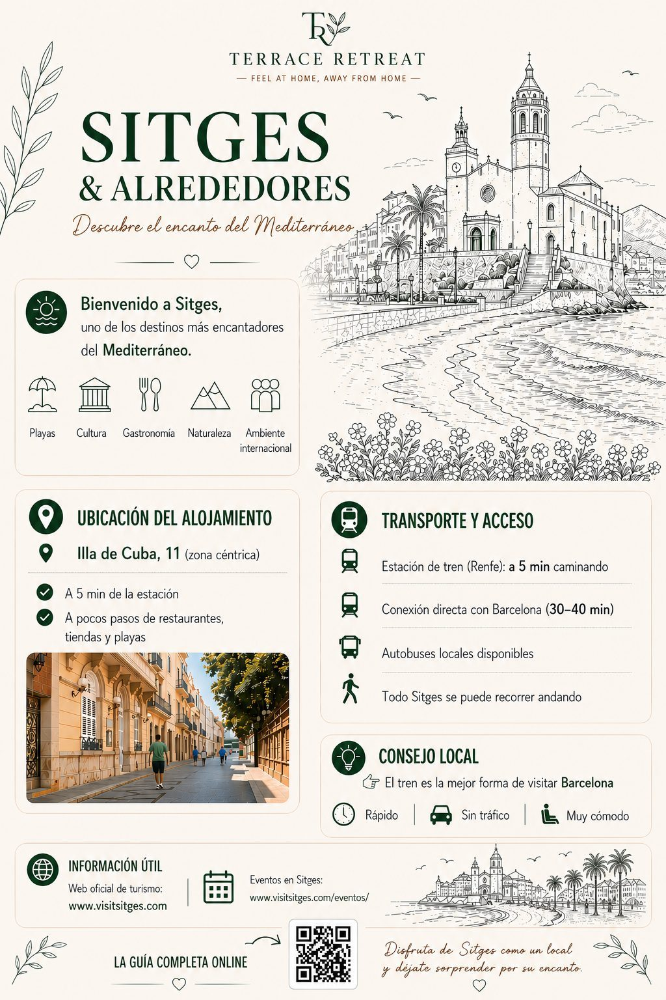
📍 Transporte & emplacement1 / 11
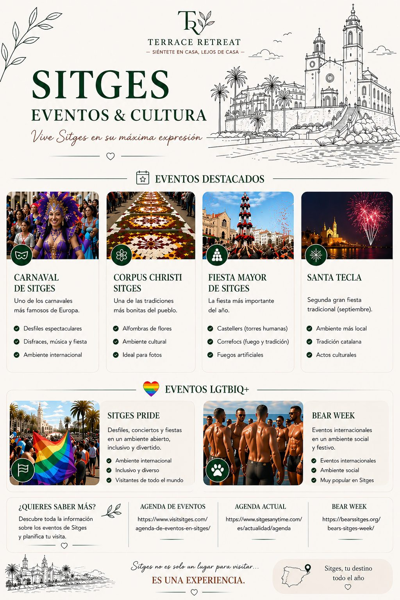
🎉 Fiestas y eventos LGBTQ+2 / 11
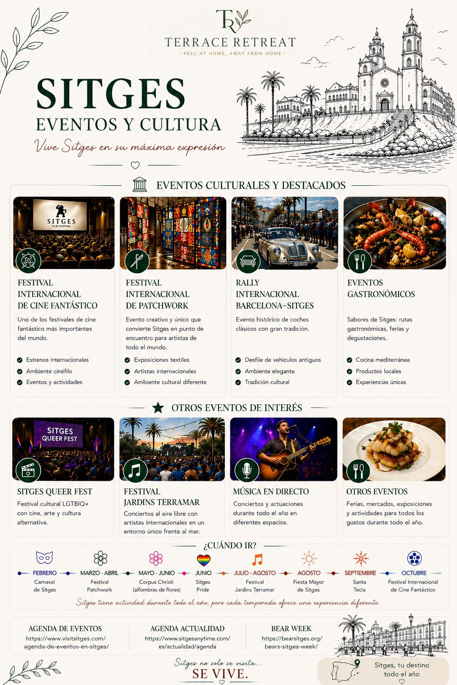
🎭 Cultura y festivales3 / 11
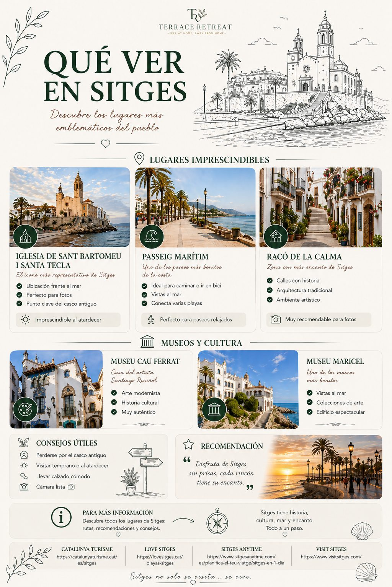
🏛 Qué ver à Sitges4 / 11
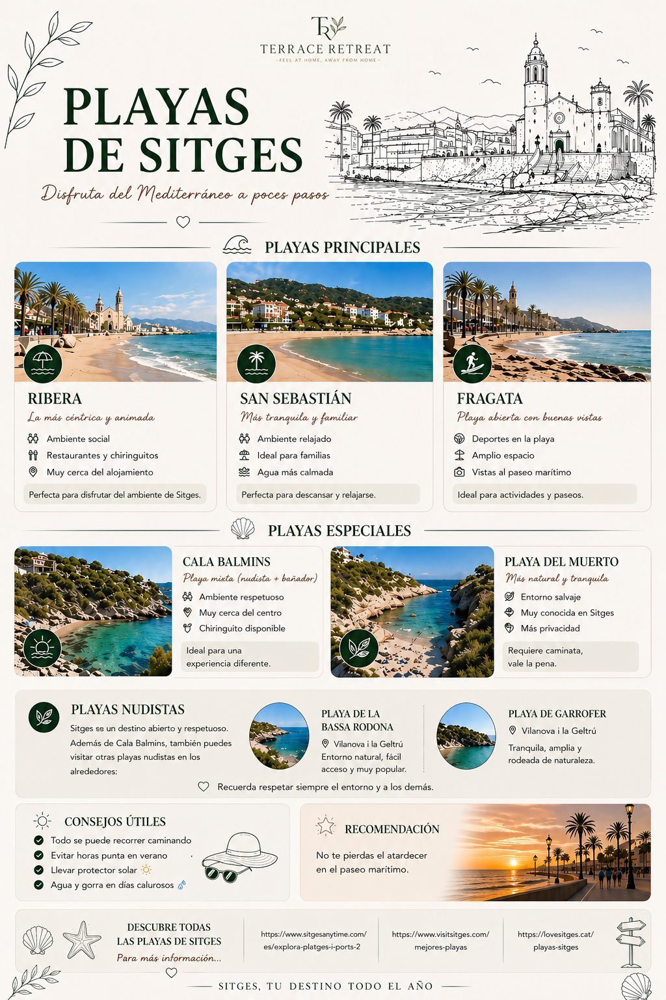
🏖 Playas5 / 11
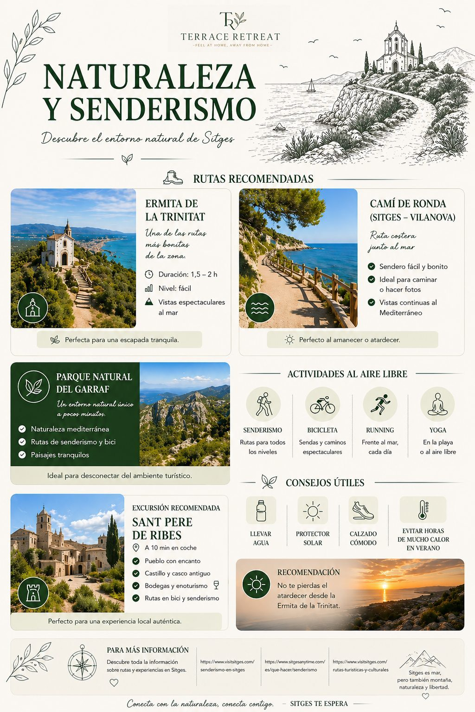
🥾 Naturaleza & randonnées6 / 11
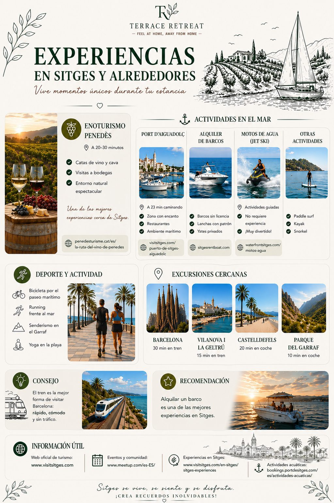
🍷 Experiencias y excursiones7 / 11
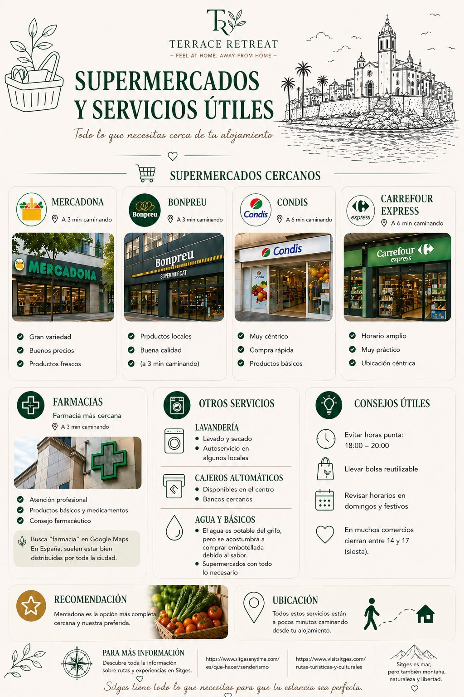
🛒 Servicios utiles8 / 11
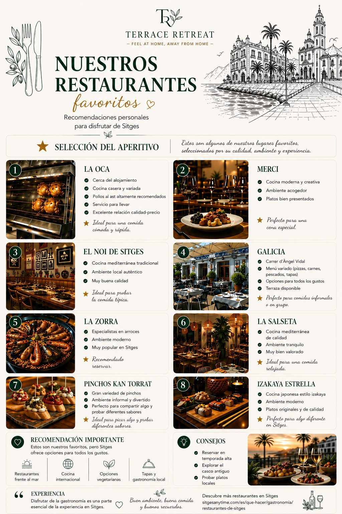
🍴 Restaurantes recommandés9 / 11
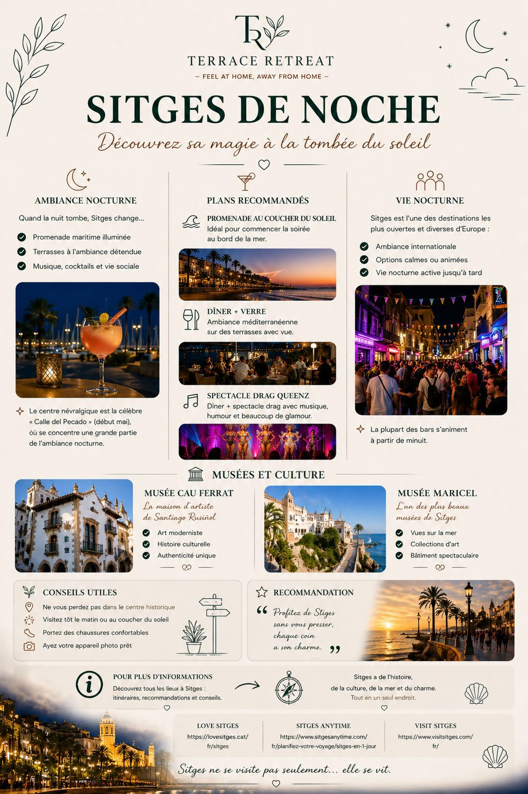
🌃 Vida nocturna y últimos planes10 / 11
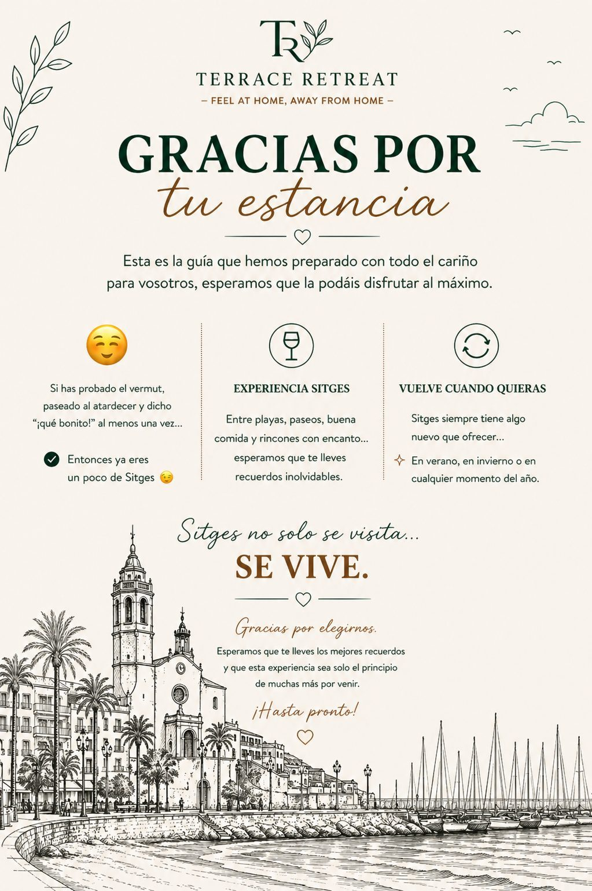
💛 Gracias por tu estancia11 / 11